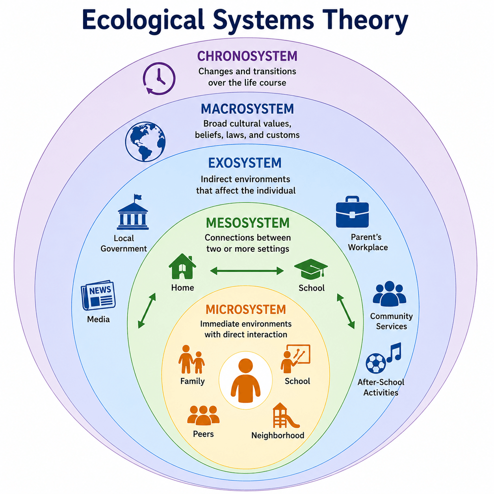

The Big Picture: Navigating the Social World
From the moment we are born, our emotional responses and social interactions shape who we become. Social-emotional development focuses on how our relationships with caregivers, peers, and broader societal systems evolve across the lifespan. On the AP Exam, this topic deeply tests how environmental frameworks, parenting styles, attachment milestones, identity crises, and aging expectations collectively dictate human behavior.
1.Bronfenbrenner's Environmental Layers
To understand human development, we cannot look at an individual in a vacuum. The Ecological Systems Theory asserts that human development is profoundly shaped by multiple nested, interacting environmental systems ranging from immediate personal connections to broad cultural contexts. These environmental layers are divided into five distinct systems:
- Microsystem
- The immediate, face-to-face environment an individual directly interacts with on a daily basis, such as family members, classmates, neighborhood peers, and school teachers.
- Mesosystem
- The structural interactions and relationships that occur between different components of a person's microsystem, such as a parent meeting with a schoolteacher or the connection between a child's home life and peer group.
- Exosystem
- External environmental settings or institutions that indirectly affect a person's development, even though the individual is not directly involved in them, such as a parent's workplace policies or community healthcare services.
- Macrosystem
- The overarching cultural context encompassing the shared values, societal laws, political ideologies, and economic customs that indirectly mold development across a community.
- Chronosystem
- The temporal dimension of time, including major life transitions, historical shifts, and changes in socio-historical circumstances that influence an individual's developmental path over their life course.

2.Infancy, Temperament, and Attachment
An infant's social journey begins with their biological Temperament: an individual's inborn, genetically driven pattern of emotional reactivity and behavioral self-regulation that manifests early in life. This foundational biological trait directly influences how children form Attachment Styles, which are the characteristic patterns of emotional bonding and relationship behavior that develop from early interactions with primary caregivers.
Historical studies with infant monkeys demonstrated the profound importance of tactile comfort over biological nourishment in attachment. When frightened, the monkeys systematically sought refuge with a soft cloth surrogate mother rather than a wire surrogate mother that provided food, proving that contact comfort is vital for emotional security.
Ainsworth's Attachment Classifications
When attachment figures leave, healthy infants often display Separation Anxiety: heightened emotional distress, fear, or crying triggered by being separated from a primary caregiver or encountering a stranger. To study these reactions systematically, Mary Ainsworth developed the "Strange Situation" laboratory paradigm. In this procedure, an infant is observed playing in a room while their caregiver and a stranger take turns entering and leaving. By watching how the child reacts to the stress of these separations and the subsequent reunions, researchers identified distinct styles of bonding that vary dynamically across cultural environments:
- Secure Attachment
- A healthy pattern where children feel completely safe and supported by their caregiver, using them as a secure base to explore new spaces, expressing distress when they leave, and being easily comforted upon their return.
- Insecure Attachment
- A broader pattern where a child does not feel consistently safe, valued, or supported by a caregiver, giving rise to anxious, avoidant, or unpredictable behavioral dynamics in close relationships.
- Avoidant Attachment
- A specific insecure style characterized by conspicuous emotional distance, extreme discomfort with intimacy, and a coping tendency to rely entirely on oneself rather than seeking support from caregivers or peers.
- Anxious Attachment
- An insecure pattern marked by a strong, needy desire for extreme closeness mixed with an intense, pervasive fear of rejection or abandonment, resulting in constant worry and relational instability.
- Disorganized Attachment
- An insecure style lacking any coherent behavioral strategy, where children show confused, dazed, or contradictory responses toward caregivers, typically stemming from fear, abusive trauma, or severely erratic caregiving.
These early childhood bonds heavily predict how adults form romantic and familial connections later in life.
3.Caregiving Frameworks: Parenting Styles
The stylistic demands and responsiveness of caregivers play a massive role in child outcomes, though cultural differences heavily modulate these effects. Caregivers generally fall into one of three primary categories:
- Authoritative Parenting
- A highly successful style characterized by high expectations combined with warmth, emotional support, and open, democratic communication. This approach encourages children to cultivate personal responsibility and healthy independence.
- Authoritarian Parenting
- A restrictive style characterized by high demands and rigid rules coupled with incredibly low emotional responsiveness. It demands absolute obedience and strict discipline over mutual warmth or constructive discussion.
- Permissive Parenting
- A lax style characterized by high warmth and emotional responsiveness but incredibly low behavioral demands or household rules. This approach grants children immense freedom with little structural discipline, boundaries, or expectations.
4.Peer Dynamics and Play Milestones
As children mature, their social spheres widen beyond the family circle. In early childhood, peer interaction primarily manifests through distinct developmental stages of play:
- Parallel Play
- A stage where young children play adjacent to one another in the same space, utilizing similar toys, but do not directly interact or coordinate their play activities.
- Pretend Play
- An advanced play milestone where children use active imaginations to project roles, enact complex scenarios, and utilize objects symbolically to represent entirely different things.
As individuals transition into adolescence, they gradually rely far more on peer relationships for validation and support than on their parents.
5.Adolescence, Cognition, and Identity
During the teenage years, cognitive development prompts a unique flare-up of Adolescent Egocentrism: a heightened self-focus where individuals struggle to separate their personal concerns from the thoughts of those around them. This egocentrism breeds two distinctive cognitive distortions:
- Imaginary Audience
- The strong bias that others are constantly observing, monitoring, and judging one's appearance, actions, and minor blunders far more than they actually are.
- Personal Fable
- The deep belief that one's internal thoughts, feelings, and life experiences are completely unique, special, and invulnerable, leading to the idea that others cannot truly understand them.
Marcia's Identity Statuses
Building on the adolescent quest for a stable sense of self, teenagers are classified into four distinct identity statuses based on whether they have gone through an exploration crisis and made a firm life commitment:
- Identity Achievement
- The status where an individual has thoroughly explored various options and successfully made a committed choice regarding their values, career goals, and core beliefs.
- Identity Moratorium
- The status where an individual is currently in the midst of an active crisis, exploring options and alternative paths, but has not yet settled on a definitive commitment.
- Identity Foreclosure
- The status where an individual blindly commits to specific values, goals, or lifestyle expectations handed down by parents or authority figures without ever independently exploring alternative choices.
- Identity Diffusion
- The status where an individual has neither explored identity options nor made any meaningful commitment to specific values, directions, or life beliefs. This identity search also shapes familial, occupational, and racial/ethnic identities.
6.Psychosocial Stages Across the Lifespan
Developed by Erik Erikson, the stage theory of psychosocial development argues that individuals must successfully confront and resolve a specific psychosocial conflict at eight different stages across the lifespan to develop adaptively. The eight universal developmental conflicts include:
- Trust and MistrustInfancy
- Babies learn to view the world as a safe, predictable, and reliable place if their caregivers provide consistent, responsive care; irregular or cold care leads to pervasive insecurity.
- Autonomy and Shame and DoubtToddlerhood
- Children strive to develop physical independence and self-control over basic tasks. Success breeds autonomy, while harsh criticism or overprotection can result in deep self-doubt.
- Initiative and GuiltEarly Childhood
- Children begin to assert power, plan tasks, and take charge through play. Encouragement creates leadership confidence, whereas heavy restrictions foster a sense of inadequacy.
- Industry and InferiorityMiddle Childhood
- School-aged children strive to master formal academic and social skills. Success produces competence, while repeated failure or teacher criticism can leave them feeling inferior.
- Identity and Role ConfusionAdolescence
- Teenagers explore different social roles, values, and career goals to construct a cohesive sense of self. Failing to navigate this stage results in a fragmented sense of direction.
- Intimacy and IsolationEarly Adulthood
- Young adults focus on forming deeply close, mutually vulnerable romantic and platonic relationships. Success brings love and connection, while failure results in loneliness.
- Generativity and StagnationMiddle Adulthood
- Middle-aged adults focus on contributing to society, working productively, and guiding the next generation. Failure to find a meaningful contribution results in a feeling of unproductiveness.
- Integrity and DespairLate Adulthood
- Older adults look back and reflect on their life choices. A sense of fulfillment brings wisdom and ego integrity, while focusing on missed opportunities yields bitter regret.
📋 AP Core Exclusion: Sigmund Freud’s controversial psychosexual stage theory of development is explicitly outside the scope of the AP Psychology Exam. Focus your study time entirely on Erikson's psychosocial stages!
7.Adulthood Transitions and Trauma
Social development continues into adulthood as individuals navigate cultural guidelines. Many societies follow a Social Clock: a culturally shared expectation or prescriptive "timetable" for when major milestones (such as finishing school, marrying, or retiring) are supposed to happen, influencing whether individuals judge themselves to be "on time". Many modern cultures now recognize a transitional phase known as Emerging Adulthood (roughly ages 18–25), a bridge between adolescence and full adulthood marked by intense exploration of identity and career paths.
Finally, social development can be heavily disrupted by Adverse Childhood Experiences (ACEs), potentially traumatic events like abuse, neglect, or severe household dysfunction occurring early in life. Experiencing ACEs can have profound, long-lasting impacts on physical health, mental health, and relationship patterns across the lifespan, though significant sociocultural differences exist regarding how these traumas affect outcomes.
8.Don't Trip Up! (Common Misconceptions)
⚠️ Authoritative vs. Authoritarian: This is one of the most common traps on the AP Psychology Exam! To protect your score, remember that the AuthoriTATive parent is "Totally Awesome" because they listen, explain rules, and show high warmth. The AuthoriTARian parent is like a dictatorial "Totalitarian" ruler who expects blind obedience without discussion.
9.Key Terms in This Topic
10.Practice This Topic
Test yourself on exactly what you just read. The numbers on each button show how much material is waiting for you.
The same self-check questions that close your guided notes. Find out whether attachment, parenting styles, and Erikson's stages stuck.
Start Quick Check →Flip through the key terms from this topic, including the attachment styles, parenting styles, and Erikson's psychosocial stages.
Open the deck →AP-style multiple choice on ecological systems, attachment, parenting styles, identity, and psychosocial stages, with an explanation after every answer.
Take the quiz →